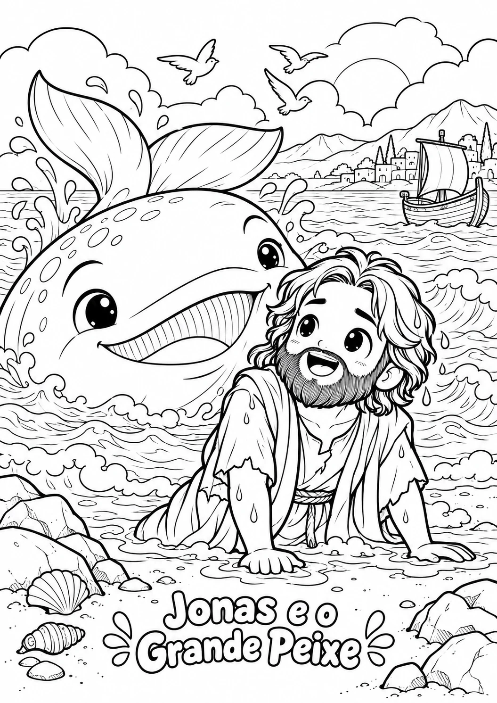

COLORINDO COM JESUS
Pequenas mãos.
Grandes histórias.
Um pouquinho de cor, um montão de carinho. Histórias da Bíblia para descobrir e colorir com quem você mais ama.
Seu livro por R$ 14,90pagamento único
Quero colorir com meu pequenoMaterial digital para imprimir. A diversão acontece no papel.

para colorir
Uma página, muitas possibilidades.
UM CONVITE PARA DESACELERAR
Troque um pouco
de tela por
um tempo juntos.
Separe os lápis, escolha uma história e sente pertinho. O resto é deixar a imaginação dos pequenos acontecer.
Descobrir com carinho
Histórias bíblicas que abrem espaço para boas conversas.
Criar do seu jeitinho
Cada desenho ganha vida com as cores que a criança escolher.
Fazer uma pausa em família
Uma atividade simples para compartilhar, longe das telas.
DÊ UMA ESPIADINHA
Grandes histórias.
Um mundo para colorir.
São 15 ilustrações cheias de detalhes.
Estas são algumas das páginas do seu livro.
Toque em um desenho para ver de pertinho.
15 desenhos para imprimir e colorir em casa.
DO SEU CELULAR PARA O PAPEL
Simples de começar.
Gostoso de aproveitar.
- 1
Garanta seu livro
Finalize a compra pelo checkout da Cakto.
- 2
Imprima suas favoritas
Você recebe o material digital e imprime em papel A4, em casa ou na gráfica.
- 3
Espalhe as cores
Separe os lápis e aproveite esse momento com seu pequeno.
UMA ATIVIDADE. MUITOS MOMENTOS.
Colorindo
com Jesus
Um livro para encher de cor e guardar com carinho.
- 15 desenhos bíblicos para colorir
- Capa colorida + índice das histórias
- 18 páginas em formato A4
- Orientações para imprimir
R$ 14,90pagamento único
Quero meu Colorindo com JesusCompra pelo checkout Cakto.
Produto digital. Impressão por conta do comprador.
ANTES DE COMEÇAR
Ficou alguma
dúvida?
Vou receber um livro na minha casa?
Você recebe o livro em arquivo digital para imprimir. Nenhum item físico é enviado. As imagens mostram como o material pode ficar depois de impresso.
Como faço para imprimir?
Use papel A4, com uma página por folha e impressão em apenas um lado. Você pode imprimir em casa ou levar o arquivo a uma gráfica. O livro inclui orientações para ajudar.
O que vem no livro?
São 18 páginas no total: uma capa colorida, orientações de impressão, um índice e 15 desenhos bíblicos para colorir. Entre as histórias estão Noé, Jonas, José, Moisés e cenas da vida de Jesus.
Preciso imprimir tudo de uma vez?
Não. Você pode escolher as páginas que quer colorir e imprimir aos poucos. Para os desenhos, a impressão pode ser em preto e branco.